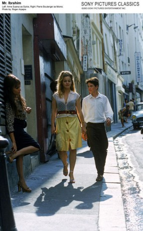
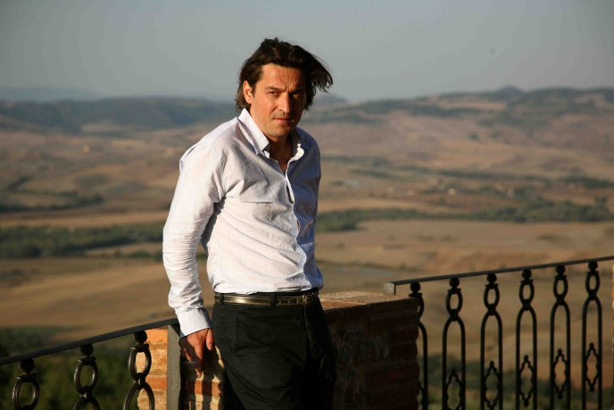

#6891 Poliezei


 IMDB-Wertung: 7.3 / 10
IMDB-Wertung: 7.3 / 10  Metascore: 0
Metascore: 0 
Wovon der Rest der Gesellschaft noch nicht einmal etwas ahnt - für die Polizisten, die in der Pariser Einheit für Jugendschutz arbeiten, sind die dunklen Geheimnisse, die sich in Familien aller Schichten verbergen, Arbeitsalltag. Die Frauen und Männer der von Balloo geleiteten Abteilung bilden eine verschworene Gemeinschaft: Die Freundinnen Nadine und Iris, der aufbrausende Fred, der Macho Bamako, der intellektuelle Schlaumeier Gabriel und die anderen - sie alle verbindet eine unglaubliche Hingabe an den Job, ein chaotisches Privatleben, Mitgefühl für die Opfer und eine herzliche Abneigung gegen den Bürokraten Beauchard, den Chef der Dienststelle. Als Beauchard - als PR-Maßnahme - einer Fotografin gestattet, die Arbeit der Jugendschützer zu begleiten, verändert sich das Gleichgewicht der Truppe. Fred lehnt die Anwesenheit der Fotografin Melissa strikt ab, doch dann ist es ausgerechnet er, der nach einem traumatischen Erlebnis im Job die Nähe zu Melissa sucht...
Jahr: 2011
Dauer: 122 Minuten
FSK: 16
Land: Frankreich Studio: Central FilmTonspuren:
Untertitel:
Auflösung: 1080p (1920x1040) Größe: 8017 MB
Genre: Drama, Krimi
Regisseur: Maïwenn
Drehbuch: Maïwenn
Soundtrack:
Darsteller:
 Karin Viard als Nadine
Karin Viard als Nadine Joey Starr als Fred
Joey Starr als Fred Marina Foïs als Iris
Marina Foïs als Iris Nicolas Duvauchelle als Mathieu
Nicolas Duvauchelle als Mathieu Maïwenn als Melissa
Maïwenn als Melissa Riccardo Scamarcio als Francesco
Riccardo Scamarcio als Francesco- Emmanuelle Bercot als Sue Ellen
 Frédéric Pierrot als Baloo
Frédéric Pierrot als Baloo- Jérémie Elkaïm als Gabriel
 Wladimir Yordanoff als Beauchard
Wladimir Yordanoff als Beauchard-  Anne Suarez als Alice
 Sandrine Kiberlain als Mme de la Faublaise
Sandrine Kiberlain als Mme de la Faublaise-  Louis-Do de Lencquesaing als M. de la Faublaise
- Anthony Delon als Alex
 Audrey Lamy als La mère au bébé secoué
Audrey Lamy als La mère au bébé secoué Lilou Fogli als Femme dîner 2
Lilou Fogli als Femme dîner 2- Michel Chesneau als Barman café
- Julien Landais als Frère de Melissa
 Arben Bajraktaraj als Yougo échappé
Arben Bajraktaraj als Yougo échappé Alice de Lencquesaing als Sandra
Alice de Lencquesaing als Sandra- Nina Rodriguez als Fille Baloo
- Karole Rocher als Chrys
- Arnaud Henriet als Bamako
- Naidra Ayadi als Nora
- Laurent Bateau als Hervé, le mari de Nadine
- Carole Franck als Céline
- Marcial Di Fonzo Bo als Le prof de gym
- Alain Attal als Marc
- Maëva Pasquali als Estelle
- Bine Sarambounou als La mère d'Ousman
- Sophie Cattani als La mère qui a enlevé son bébé
- Laurence Arrouy als Médecin accouchement
- Aurélie Braconnier als Sage-femme
- Nathalie Boutefeu als La mère de Sandra
- Christelle Charpentier als Femme accueil BPM
- Alexandre Carrière als Père Dolorès
- Caroline Attal als Femme dîner 1
- François Kraus als Homme dîner 1
- Orazio Massaro als Homme dîner 2
- Virgil Vernier als Homme dîner 3
- Hervé Temime als Substitut du procureur
- Albert Igual als Papy Marie
- Sébastien Farran als Commissaire divisionnaire BRB
- Winston Ong als Homme sans fantasme
- Riton Liebman als Franck
- Emmanuel Gayet als Denis
- Valérie de Monza als La juge
- Olivier Breton als Homme au café
- Jamel Barbouche als Homme barbu
- Patrick Le Besco als Père de Melissa
Datei: X:\2011(N-Z)\Poliezei (2011, FSK16, 1920x1040).mkv seit 06.09.2017
Festplatte: HD 2011(G-Z)
 Es gibt insgesamt 132 Filme in der Gruppe '2011(N-Z)'
Es gibt insgesamt 132 Filme in der Gruppe '2011(N-Z)'